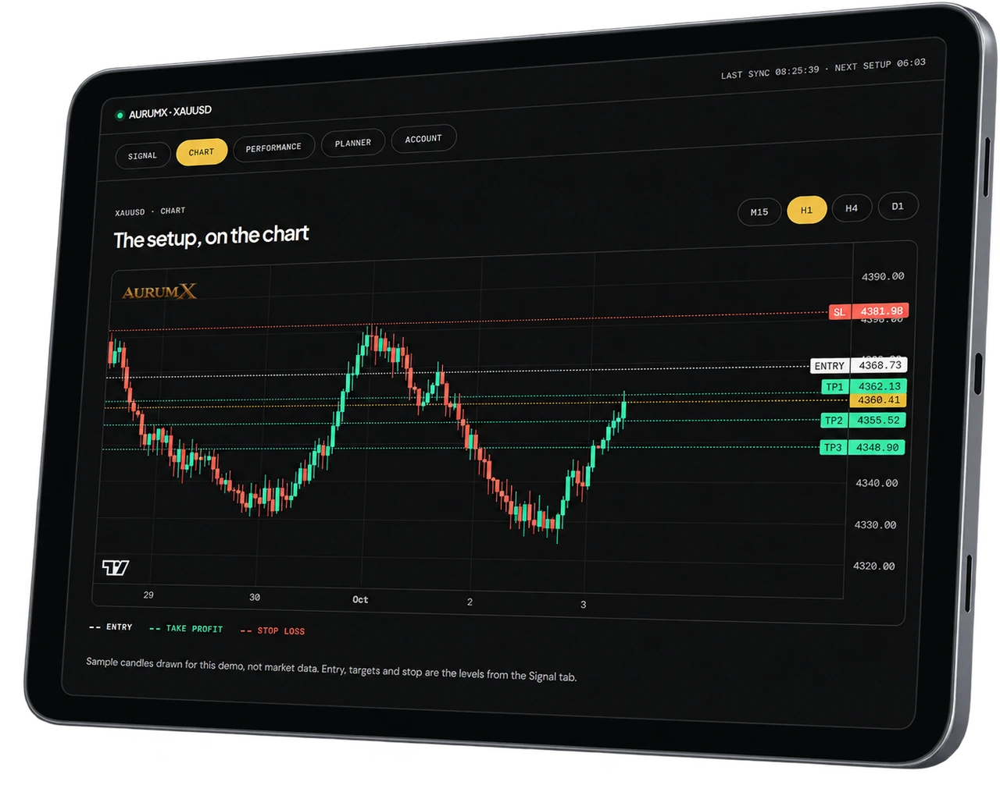

Where the setup becomes actionable.
XAUUSD / STRUCTURED SIGNALS
GOLD SIGNALS
WITH A PLAN BEHIND THEM.
Structured XAUUSD setups with an entry, take profits, a stop loss and a risk planner, for members of the AurumX partner broker programme.
Become a member →XAUUSD ONLYREAL-TIME ALERTSRISK PLANNER


01 / THE SETUPONE SIGNAL.
ONE SIGNAL.
A COMPLETE SETUP.
No vague direction. No missing exit. The whole plan is visible before you decide.
Defined target levels.
Risk defined before entry.
Position size from your own balance and risk.
Know the moment a new setup opens.
02 / THE DASHBOARDSEE AURUMX
SEE AURUMX
IN ACTION.
Read the plan, inspect the levels, then check the recorded outcome. The screens below use sample data.
THE DASHBOARD
Every call arrives complete.
- Direction, entry, stop loss and TP1–TP3 on every signal
- Live price and running pips while the trade is open
- A chart with the entry, targets and stop drawn on it
- A risk planner that sizes the lot from the live stop
- Tap any level to copy it into your platform
THE CHART
Your levels, drawn on the chart.

03 / THE RECORDTHE FULL LEDGER.
THE FULL LEDGER.
LOSSES INCLUDED.
Every signal counted the same way, whatever the outcome.
SAMPLE FIGURES. PLACEHOLDERS UNTIL THE LIVE RECORD IS CONNECTED.
The live site shows AurumX's real record here, read from the signal log. Past results are not a promise of future ones, and every trade is placed by you.
04 / TRANSPARENCYNOT EVERY
NOT EVERY
TRADE WINS.
“A trading service earns trust by showing the full record, not just the comfortable parts.”
Trading involves risk. AurumX does not promise profits or remove losses. It provides structured XAUUSD setups with defined entry, take-profit and stop-loss levels.
You remain responsible for your trading decisions and your risk.
How it works →05 / THE WORKFLOWFOUR STEPS.
FOUR STEPS.
NO THEATRE.
SIGNAL ARRIVES
An XAUUSD setup becomes available.
REVIEW THE PLAN
Entry. TP. SL. Risk.
YOU DECIDE
Check it against your own trading plan, then decide.
TRACK THE OUTCOME
Results are recorded for everyone to see.
HERE’S THE STRUCTURED SETUP. YOU DECIDE WHETHER TO EXECUTE IT.
06 / MEMBERSHIPHOW YOU
HOW YOU
GET ACCESS.
Membership is through our partner broker. Three steps, and your key arrives by email once we have checked your account.
OPEN AN ACCOUNT
A new live account with the partner broker, using the AurumX partner link.
DEPOSIT
Choose the tier you want. It sets how long your key runs.
SEND YOUR NUMBER
Submit your account number on the membership page.
GET YOUR KEY
We verify it, then email your access key.
07 / QUESTIONSSHORT
SHORT
ANSWERS.
Is AurumX auto trading?
No. Every signal is a plan with an entry, take profits and a stop loss. You decide whether to place it, and you place it yourself.
Which pair is covered?
Gold only: XAUUSD.
Do I need to watch the chart all day?
No. Wait for the alert, review the plan, and take only the setups that fit your own risk.
How long does my key last?
It depends on your deposit tier. A key runs on calendar days; trading days are Monday to Friday, so the count depends on the day you start.
Is a key locked to one device?
No. A key is for one person, not one device.
How do I renew?
Apply again on the membership page. Days are added to what is left on your key.